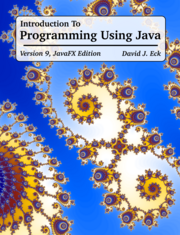

|

|
WELCOME TO Version 9.0 of Introduction to Programming Using Java,
a free, on-line textbook for introductory
programming that uses Java as the language of instruction. This book is directed
mainly towards beginning programmers, although it might also be useful for experienced
programmers who want to learn something about Java.
Version 9 covers Java 17. It updates the previous version mostly by moving definitively to Java 17
and by adding a new Swing edition.
This edition of Version 9 uses JavaFX for GUI programming;
an alternative edition that uses
Swing instead of JavaFX is also available. Earlier versions of the book are also available;
see the preface for links to
older versions.
You can the download this
web site for use on your own computer.
PDF, e-book, and print
versions of the textbook are also available.
Links can be found at the bottom of this page.
Readers are strongly encouraged to try out the sample programs as they read
the book! You can download the source code separately or as part of the web site using the links below.
See the README file
for information about how to compile and run the examples.
Short Table of Contents:
©1996--2022, David J. Eck.
This work is licensed under a Creative Commons Attribution-Noncommercial-ShareAlike 4.0 License.
(This license allows you to redistribute this book in unmodified form for non-commercial purposes. It allows you
to make and distribute modified versions for non-commercial purposes, as long as you include an attribution to the
original author, clearly describe the modifications that you have made, and distribute
the modified work under the same license as the original. Permission might be given by the
author for other uses. See the
license for full
details.)
This book is available for downloading and for on-line use at the Web address:
https://math.hws.edu/javanotes/
Downloading And Other Links
-
Full Web Site Download:
-
Source Code Downloads:
-
PDF Downloads:
-
E-book Downloads.
-
Print Version Available from Lulu.com:
-
Printed version — I have made this book available for
purchase in printed versions from the print-on-demand publisher
lulu.com. This is for convenience only, for those who would
like to have a bound printout in a nice form.
(Please do not feel obliged to buy the printed version; I do not make any money from it!)
The entire book is available in a thick and somewhat unwieldy 772-page printed version:
Introduction to Programming Using Java.
It is also available in two parts:
Chapters 1 through 7,
and Chapters 8 through 13.
-
Source Files for the Book
-
Complete Sources — The complete source files that are used to produce both the web site
and PDF versions of this book are available for download, but will be useful only to a very limited
audience. See the end of the preface for more information and a link.
|